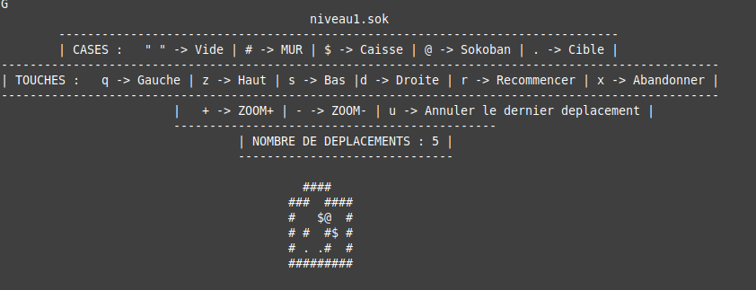
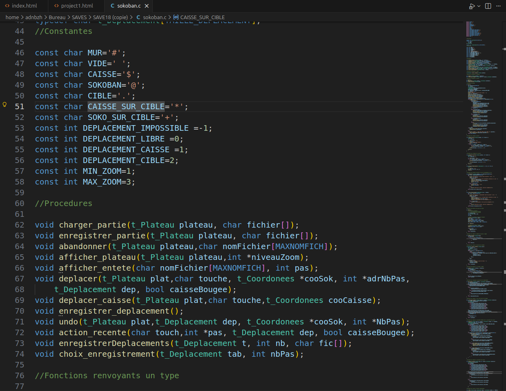
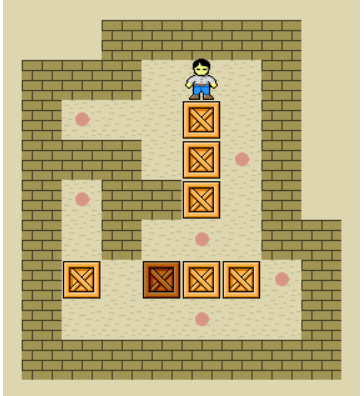

Type de Projet
Algorithme de résolution
Durée
Semestre 1 (septembre-janvier)
Équipe
Travail en équipe
Statut
Réalisé
À propos du Projet
Ce projet avait pour objectif de créer un algorithme capable de résoudre automatiquement les niveaux du jeu de casse-tête Sokoban. L'accent était mis sur l'optimisation du nombre de mouvements et la clarté du code.
En développant en langage C, j'ai dû gérer des structures de données complexes et implémenter des stratégies de recherche pour explorer l'ensemble des solutions.
Technologies Utilisées
Langage C
Langage principal pour l'implémentation de l'algorithme
Git
Gestion de versions et collaboration d'équipe
Unix Terminal
Affichage en temps réel dans le terminal
Défis Rencontrés
- Gestion d'une structure algorithmiquecomplexe
- Optimisation de la recherche pour éviter les chemins redondants
- Affichage fluide et temps réel en terminal Unix
- Gestion efficace des ressources pour les grands espaces de recherche
Approche Adoptée
- Planification pas à pas des fonctionnalités
- Utilisation d'une logique algorithmique claire et documentée
- Tests itératifs et débogage méthodique
- Optimisation progressive du code pour plus de performances
Résultats et Apprentissages
Ce que j'ai appris
Ce projet m'a permis d'acquérir une expertise en algorithmique avancée et de développer ma rigueur en tant que développeur. J'ai compris l'importance de la clarté du code et de la pensée critique face aux défis et aux blocages. Travailler en C m'a aussi montré comment écrire du code performant et proche de la machine.
Galerie du Projet


